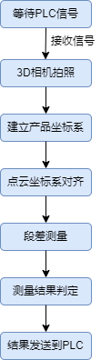

本项目主要测量工件高度落差。
如下图所示为待测量产品工件，主要测量内侧边到基准平面的高度落差。

点云坐标系对齐
相当于产品定位，定位出产品的中心，将其移动到坐标系原点，如下图所示。
点云段差测量
利用卡尺工具在产品某一位置探测点，然后借助点云距离测量工具完成点到面的距离测量，如下图所示。
生产界面运行结果如下图所示。
参见“\Samples\应用案例\测高类项目\点云测量项目\点云段差测量工程.gvp”。